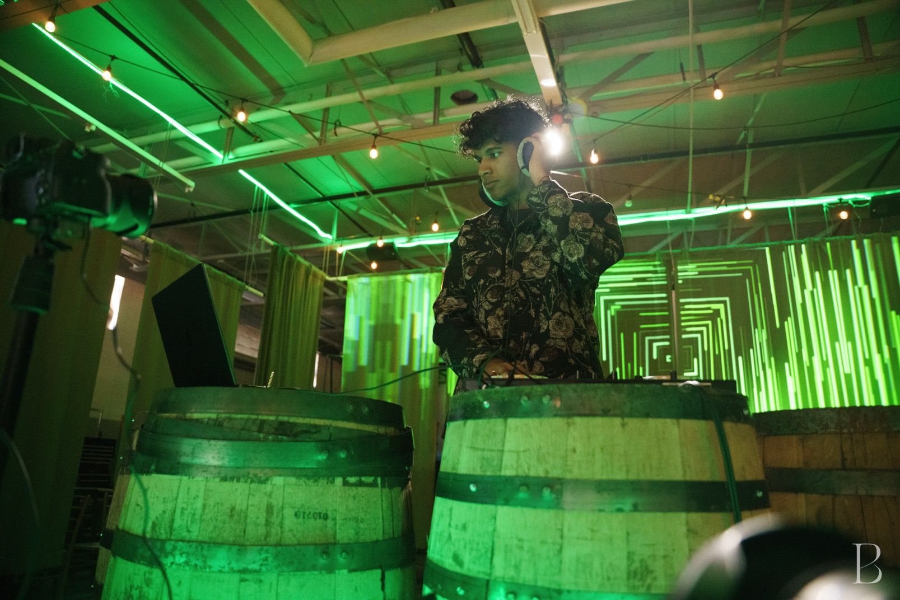

DJ sets and mixes
Plan cocktail-hour music, dance-floor sets, or custom mixes around the audience.
Music · DJs, musicians, and event support
Choose a DJ set, custom mix, live musicians, sound support, or a combined lineup shaped around the audience and schedule.
Plan the music
Available formats
Plan cocktail-hour music, dance-floor sets, or custom mixes around the audience.
Add instrumentalists, vocalists, dhol players, or other performers to the lineup.
Coordinate playlists, pacing, event sound, and musical cues with the run of show.
Plan the soundtrack